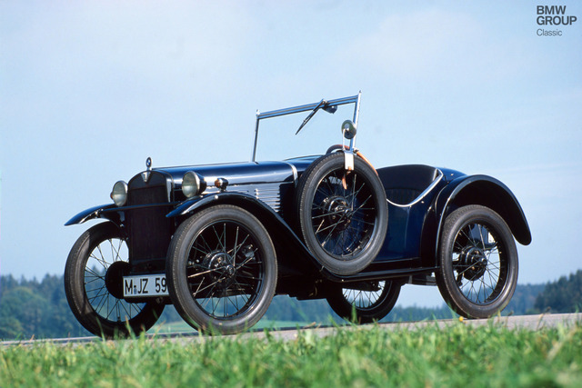
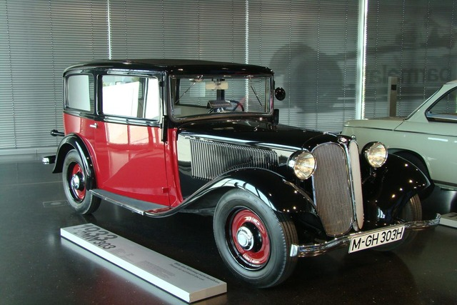

BMW
A BMW (Bayerische Motoren Werke AG) története 1916-ban kezdődött, amikor Gustav Otto és Karl Rapp egyesítette erőiket a repülőgépmotorok gyártása érdekében. Az első világháborút követően, 1917-ben a BMW megalapította az első önálló autógyárát, és bemutatta az első autóját, a BMW 3/15-öt, melyet a Dixi cég által licenc alapján gyártottak. Az 1960-as és 1970-es években a BMW a sportos és luxus autók szegmensében növekedett, különösen az ikonikus "BMW 02 Series" és "BMW 3 Series" modellekkel. Az 1980-as években a BMW bevezette a luxus limuzinokat és a sportos roadstereket, mint például a "BMW 7 Series" és a "BMW Z Series". A BMW azóta tovább fejlesztette az elektromos és hibrid autók technológiáját, és a fenntartható mobilitás irányába is elmozdult. Ma a BMW a vezető autógyártó vállalatok közé tartozik a világon.
 Itt mutatjuk be személyes kedvencünket a BMW kínálatából.
Milán személyes kedvence:
BMW M5 E60
Göröcs személyes kedvence:

BMW X6